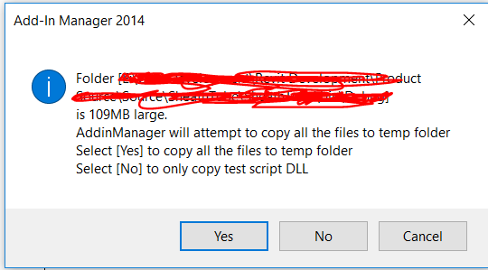
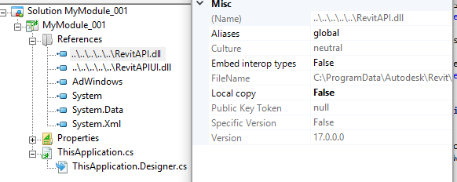

Copy Local False and IFC Utils for Wall Openings
New important issues are researched and brilliant solutions shared daily in the Revit API discussion forum.
Here are two from the current crop:
- IFC helper returns outer
CurveLoopof door or window - Setting
Copy LocaltoFalseresolves AddIn Manager issue
IFC Helper Returns Outer CurveLoop of Door or Window
Jan Grenov raised and solved
his GetInstanceCutoutFromWall problem using
the ExporterIFCUtils
method GetInstanceCutoutFromWall to
determine the outer CurveLoop of a window or a door.
The Revit API documentation states that it:
Gets the curve loop corresponding to the hole in the wall made by the instance.
Jan determined that each opening must have an OpeningCut object. If not, GetInstanceCutoutFromWall will fail!
Here is Jan's full explanation in all its gory detail:
Question: I find that the
ExporterIFCUtilsGetInstanceCutoutFromWallis a fine way to get the outer CurveLoop of a window or a door, but sometimes for some strange reason it does not work, and no helpful error message is supplied.I attached:
- A simple test project including only one wall containing two windows
- Sample code that demonstrates the problem
I hope someone can explain why
GetInstanceCutoutFromWallworks on one window but not on the other.Answer: Now I determined when the error occurs!
It happens whenever an opening family (door or window) is defined without an opening cut.
Openings must have an
OpeningCutobject. If not,GetInstanceCutoutFromWallwill fail!
This helps explain some issues people had with this method in the past, and also fits into several existing topic groups, such as use of the frequently overlooked Revit API utility classes on one hand, determining wall openings in general, gross versus net areas and volumes in particular, on the other:
- Opening geometry
- The temporary transaction trick for gross slab data
- Retrieving wall openings and sorting points
- Wall opening profiles
- Determining wall opening areas per room
- More on wall opening areas per room
- Two energy model types
Setting Copy Local to False Resolves AddIn Manager Issue
Yet another solution provided by Fair59 who suggested setting the Copy Local flag to false to resolve an issue with
the AddIn Manager: How to disable copy dialog?:
Question: Anytime I run a command from the AddIn Manager, a copy dialog shows up.

How to disable it, please?
Answer: I've had that message a few times, when I forgot to set the RevitAPI and RevitAPIUI references' Local copy flag to false:

Many thanks to Fair59 for this solution and important note in general.
We have in fact pointed out the need
to set Copy Local to false numerous
times in the past...